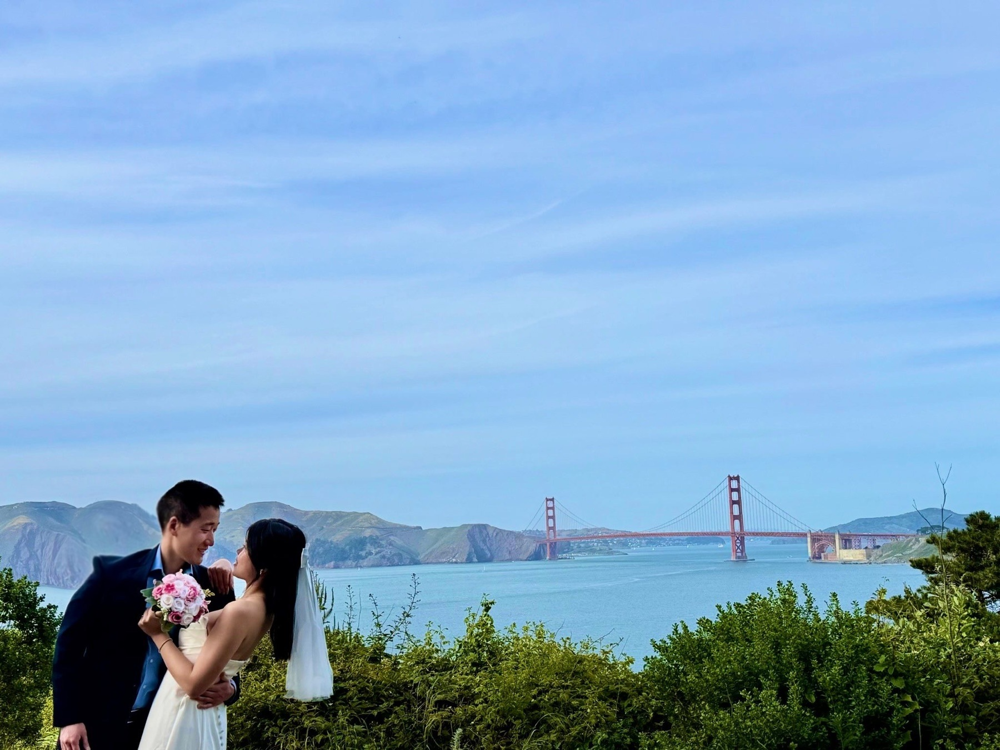
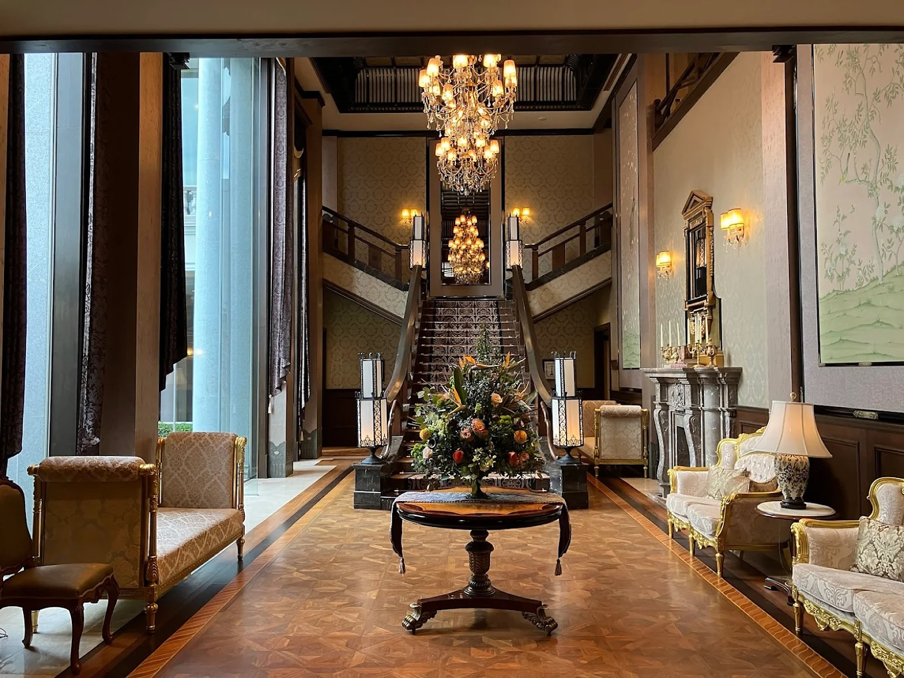
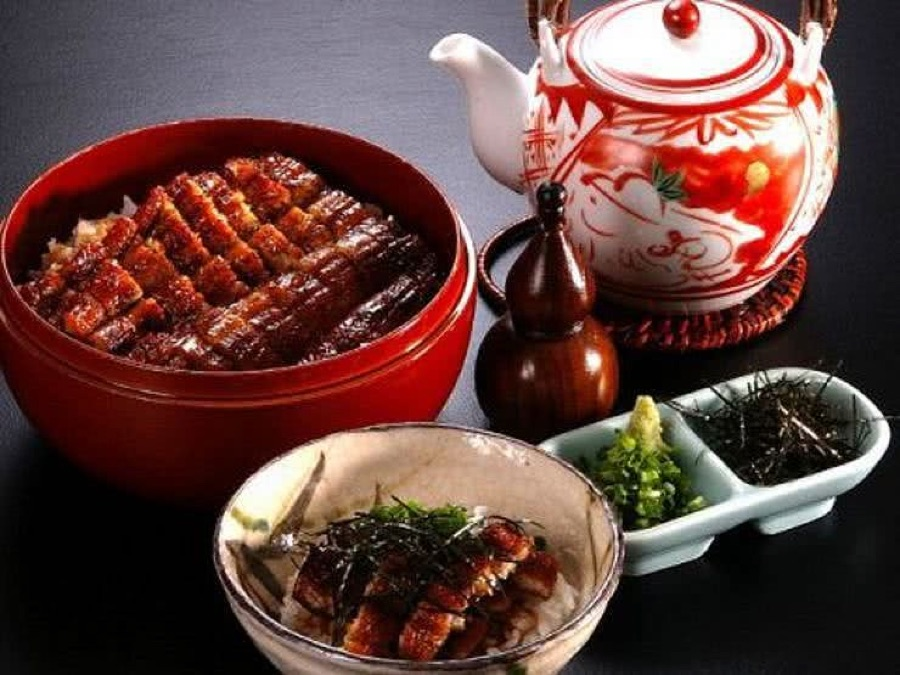
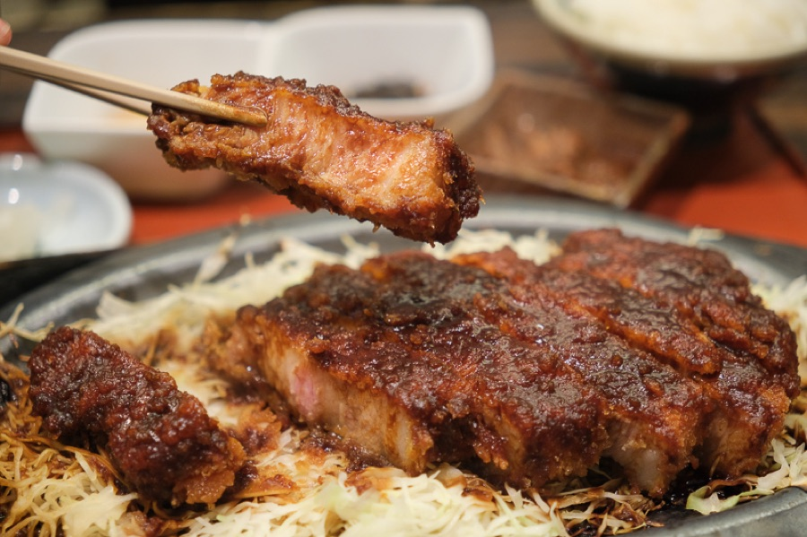

Complimentary Shuttle Recommended
A private shuttle bus will run directly between Nagoya Station (Taikō-dōri Exit) and the venue on the wedding day. Travel time approx. 15–20 minutes.

Welcome
Kim Kim is celebrating our marriage with a wedding party in Japan, and we would be honoured to have you with us. Please join us in Nagoya for a weekend of celebration.
We chose Japan as a midpoint between much of where our families reside. A large part of our family also lives there now.
We are grateful you will join us in celebration.
Nestled in the prestigious, historic Shirakabe district of Nagoya, Hyakkarou is a hidden architectural masterpiece. Its core philosophy is Wakon Yōsai — Japanese spirit seamlessly woven with Western ingenuity.
The venue beautifully resurrects the glamorous Taishō Roman era (the turn of the 20th century), a magical moment in history when traditional Japan met the grand romance of European romanticism. The result is a nostalgic yet avant-garde world where cinematic beauty comes to life.
Hyakkarou 百花籠
3-6-3 Chikaramachi, Higashi-ku
Nagoya-shi, Aichi 461-0018, Japan
愛知県名古屋市東区主税町3丁目6-3

A private shuttle bus will run directly between Nagoya Station (Taikō-dōri Exit) and the venue on the wedding day. Travel time approx. 15–20 minutes.
Take a taxi from Nagoya Station and show the driver the Japanese address above. Approx. 15 minutes; ¥2,000–¥2,500.
Take the Sakura-dōri Line to Takaoka Station. The venue is a 10-minute walk from Exit 2.
Three days together in Nagoya. The wedding celebration is on Saturday; the welcome dinner and brunch are optional — just let us know on the RSVP form if you can join.
[Time and location to be announced]
A relaxed evening to say hello and settle in before the big day.
Hyakkarou 百花籠
3-6-3 Chikaramachi, Higashi-ku, Nagoya, Aichi 461-0018
愛知県名古屋市東区主税町3丁目6-3
[Ceremony and reception times to be announced]
Open in Google Maps[Time and location to be announced]
One more meal together before everyone heads off to explore Japan.
October falls right in autumn kōyō season in Japan — parks and countryside blaze with red, orange, and gold foliage. Early October weather can vary. Days are often warm — lately around 24–30 °C / 75–86 °F, and sometimes hotter — while mornings and evenings cool off. Pack a light layer for the swing.
Immerse yourself in history at Nagoya Castle, where the gold-leafed Hommaru Palace offers flat, easy walking paths. Just minutes from the venue, Tokugawaen is a majestic feudal-lord garden — a tranquil spot for traditional matcha by the water. Stroll the covered lanes of the Ōsu Kannon Shopping District for nostalgic street snacks, or dive into sleek Japanese engineering at the fully indoor SCMAGLEV and Railway Park.


Nagoya meshi is famous for bold, savoury flavours anchored by a dark red miso called aka-miso. The crown jewel is hitsumabushi — premium grilled eel over rice, enjoyed three ways: plain, with fresh condiments, and finally as a comforting dashi soup. Don’t miss miso katsu, a crispy pork cutlet drizzled with sweet-savoury miso sauce, and tebasaki, deeply addictive pepper-seasoned fried chicken wings.
Japan is a country of customs and rules. Following some basic few is the best way to show respect.
[Dress code to be announced — e.g. “Cocktail attire” or “Formal”]
Early October can vary: days are often warm, and evenings cool off, so a light jacket or wrap is a good idea.
[Hotel recommendations to be announced]
Staying near Nagoya Station is convenient — the complimentary shuttle to the venue departs from there on the wedding day.
[RSVP deadline to be announced]
Please reply as early as you can so we can plan seating and catering. You can update your reply later by emailing us.
We would love to celebrate with everyone dear to you. Our venue, however, is intimate and holds us to a strict guest count, so we are only able to offer a plus-one to a limited number of guests. If a guest is included in your invitation, we will let you know personally. Thank you so much for your understanding.
[Registry / gift information to be announced]
Your presence in Japan is truly the greatest gift to us.
Take the complimentary shuttle from Nagoya Station (Taikō-dōri Exit), a 15-minute taxi, or the Sakura-dōri subway line to Takaoka Station (10-minute walk from Exit 2). See Getting there.
We hope you can join us. Please fill in one reply per household.
RSVP response log — for Kimberly & Walter (private)